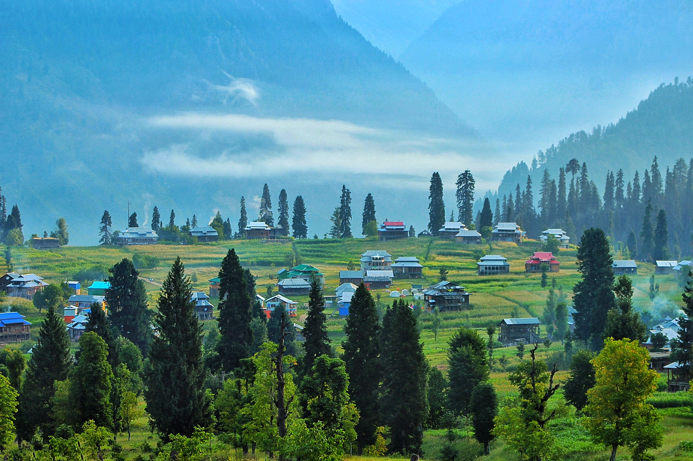

Arang Kel is a picturesque village located in the Neelam Valley of Azad Kashmir, Pakistan. Situated at an altitude of 8,379 feet (2,554 meters), it offers breathtaking views and lush greenery. The village can be reached via a chairlift or a scenic hike, making it a popular destination for nature lovers and adventure seekers. Arang Kel is known for its serene beauty and tranquil atmosphere, making it an ideal spot for a peaceful getaway. The village is surrounded by stunning landscapes, including the majestic peaks of Mount Nanga Parbat, which can be seen on clear days. Visitors can enjoy activities such as hiking, picnicking, and simply taking in the natural beauty of the area. The best time to visit Arang Kel is between April and October, when the weather is pleasant and the meadows are in full bloom. However, even in winter, the village offers a unique charm with its cold, crisp air and occasional snowfall. Whether you're looking for a challenging hike or a relaxing retreat, Arang Kel is a hidden gem that promises an unforgettable experience.
1:Arangkel
2:kel
3:Taobat
4:River Neelum
1:Kel Resort
2:Hill View Guest House
3:Musk Deer Resort
4:Elysium Hill Resort
The current weather in Arang Kel, Azad Kashmir, is mostly cloudy with a temperature of 4°C. The forecast for tomorrow shows a high of 10°C and a low of 1°C, with a chance of precipitation at 38%.
